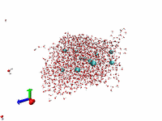

Representative Papers (in reverse chronological order)
-
K.Ichiki, A.E.Kobryn, and A.Kovalenko
Phys. Fluids (submitted).
"Resistance functions for two unequal spheres
in linear flow at low Reynolds number
with the Navier slip boundary condition"
-
K.Ichiki, A.E.Kobryn, and A.Kovalenko
J. Comput. Theor. Nanosci.
(2008)
5(10),
pp. 2004-2021
(DOI:10.1166/jctn.2008.1007).
"Targeting Transport Properties in Nanofluidics:
Hydrodynamic Interaction among Slip Surface Nanoparticles in Solution"
-
K.Ichiki and S.Consta
J. Phys. Chem. B
(2006) 110(39),
pp.19168 - 19175
(DOI:10.1021/jp062222a)
"Disintegration mechanisms of charged aqueous nanodroplets studied by
simulations and analytical models"

-
K.Ichiki and A.Prosperetti
Phys. Fluids (2004) 16 2483-2496.
"Faxen-like relations for a non-uniform suspension"
-
K.Ichiki
J. Fluid Mech.
(2002)
452,
pp. 231-262.
(DOI:10.1017/S0022112001006735)
"
Improvement of the Stokesian Dynamics method for systems with
finite number of particles
"
-
final version (July 25, 2001)
-
K.Ichiki and J.F.Brady
Phys. Fluids (2001) 13 350-353.
"
Many-body effects and matrix-inversion in low-Reynolds-number hydrodynamics
"
-
K.Ichiki and H.Hayakawa
Phys. Rev. E 57,(1998) 1990-1996.
"
Analysis of statistical quantities in simulation of fluidized beds
"
![[mpeg movie of BUBBLING FLOW]](note/b266f3.gif)
![[mpeg movie of CHANNELING FLOW]](note/b266e3.gif)
-
K.Ichiki and H.Hayakawa
Phys. Rev. E 52,(1995) 658-670.
" Dynamical simulation of fluidized beds:
Hydrodynamically interacting granular particles "
Other Papers (in reverse chronological order)
-
A. E. Kobryn, K. Ichiki, A. Kovalenko
Int. J. Quantum Chem. (2009) 109(8) pp.1666-1671
(DOI: 10.1002/qua.22160).
"Thermodynamic dependences of slip length for nanofluidic flows over
crystalline surfaces: predictions of molecular theory of solvation"
-
A.Prosperetti, K.Ichiki and Q.Zhang
Multiphase Sci. Tech. 18 (2006)
pp.135-154
(DOI: 10.1615/MultScienTechn.v18.i2.20).
"Systematic Approach to Closure Relations for Disperse Particle Flows:
Inter-Phase Force"
-
A.Prosperetti, Q.Zhang and K.Ichiki
J. Fluid Mech.
554 (2006)
pp.125-146
(DOI: 10.1017/S0022112006009402).
"The stress system in a suspension of heavy particles:
antisymmetric contribution"
-
Q.Zhang, K.Ichiki and A.Prosperetti
J. Comp. Phys.
212 (2006) 247-267
(DOI:10.1016/j.jcp.2005.07.003).
"On the Computation of ensemble averages for
spatially non-uniform particle systems"
-
K.Ichiki
Powder Technology Handbook, Third Edition
(ISBN: 1574447823, CRC Press,
January 13, 2006)
"V.21.7 Transport Properties"
-
K.Ichiki and A.Prosperetti
(unpublished)
"The viscous stress in a non-homogeneous suspension"
-
revised version (July 7, 2004)
-
first version (March 6, 2004);
"Closure procedure of viscous stress for a non-uniform suspension"
-
K.Ichiki
Prog.Theor.Phys.Suppl No. 138 (2000) pp. 736-737.
"
Fast Calculation of Hydrodynamic Interaction
among Particles in the Stokes Flows
"
-
K. Ichiki
" Particle-Scale Dynamics of Fluidized Beds "
-
K.Ichiki
(unpublished,
adap-org/9505004)
"Hydrodynamic effects of density waves in granular flows "
-
K. Ichiki
" Dynamics of many-body systems dispersed in a visous fluid "
-
H.Hayakawa and K.Ichiki
Phys. Rev. E 51,(1995) R3815-R3819.
" Statistical theory of disordered suspension "
-
K. Ichiki and H. Hayakawa
Int. J. Mod. Phys. B (1993) 7
Nos. 9-10,
pp.1899-1911.
(DOI:10.1142/S0217979293002675)
" Simulation of granular particles in flow by the Stokesian dynamics
method "
See
Seminar Section.
-
"
Dynamics of particles and DNAs in micro/nanofluidic flows
"
for
NanoForum CANADA 2008,
Edmonton, AB
(May 2008)
-
"
Fragmentation Mechanism of Charged Nanodroplets
- A Molecular Dynamics Study
"
for
WINS 2006 at UWO, London, ON
(March 2006)
- poster PDF
(A0,
A4)
written on 3/23/2006.
-
(cancelled)
"
Fragmentation of charged aqueous nanodroplets
"
AC.00009
for
The 58th Annual Meeting of APS Division of Fluid Dynamics
(Nov. 20-22, 2005) at Chicago, Illinois
- abstract
(PDF 36kb)
written on 8/12/2005.
-
"
General solutions of the Stokes flow
--- Lamb's solution and multipole expansion
"
FN.001
for
The 57th Annual Meeting of APS Division of Fluid Dynamics
(Nov. 21 - 23, 2004) at Seattle, Washington
--
program
-
"
Particles in a Fluid
"
for the group meeting at
Chem/UWO
(November 9, 2004)
-
"
Closure relations of non-uniform suspensions
"
for
International Conference on Multiphase Flow
(May 31 - June 3, 2004) at Yokohama, Japan
-
"Effective thoery of non-uniform dispersions"
for
Doi Lab. seminar
(May 24, 2004)
and
Tanaka Lab. seminar
(May 25, 2004)
-
abstract
(in Japanese; written on April 20, 2004)
-
slides
(in Japanese; written on May 23, 2004)
-
"
Non-Uniform Suspensions: Statistical Method and Constitutive Relation
"
for
UT PoF seminar
(March 11, 2004)
-
"
Closure relations of non-uniform suspensions
"
MK.003
for
The 56th Annual Meeting of APS Division of Fluid Dynamics
(Nov. 23 - 25, 2003) at Meadowlands, NJ
--
program
-
"
Statistical theory of non-uniform suspensions
"
for
JHU Mech. Eng. Dept.
Fri Thermo-Fluids Seminars
(Sep. 19, 2003)
-
" Stokesian Dynamics method "
for the series of computational powder technology
on
Journal
of
the Society of Powder Technology Japan
Vol. 40 No. 8
(2003), pp.591-601
-
a review article
(PS 336kb,
PDF 720kb)
in Japanese. (Apr. 10, 2003, revised on Apr. 18, 2003)
-
"
Numerical analysis of non-Brownian particles in Stokes flow
"
FE.001
for
The 55th Annual Meeting of APS Division of Fluid Dynamics
(Nov. 24 - 26, 2002) at Dallas, TX
--
program
-
"
Hydrodynamic interaction among particles in Stokes flow
"
for
JHU Mech. Eng. Dept.
Fri Thermo-Fluids Seminars
(Sep. 27, 2002)
-
"
Acoustic Lichtenberg Figures & the visualization of their dynamics
"
for
UT-TN-WS seminar
(27-11-2001)
-
"
Lubrication-correction for many-particle systems in Stokes flows
"
KQ.001
for
The 54th Annual Meeting of APS Division of Fluid Dynamics
(Nov. 18 - 20, 2001) at San Diego, CA, USA
-
" Microhydrodynamics of colloidal suspensions
-- Stokesian Dynamics: The Next Generation -- "
for the series of
" introduction of numerical methods for researchers on condensed-matter physics "
on
Bussei Kenkyu (Kyoto)
76-4 (2001) p.584
-
a review article
(PS 453kb)
in Japanese. (April 18, 2001)
-
"Void in particle-fluid mixtures"
(
29pZD-3)
for
Spring Conference of JPS (March 27 - 30, 2001) at Chuo Univ.
- abstract
(HTML,
PS 26kb)
written on Jan. 26, 2001 in Japanese.
-
"
Stokesian Dynamics: The Next Generation "
for
Doi Project
seminar
(Feb. 22, 2001) at Nagoya Univ.
-
"
Stokesian Dynamics: The Next Generation "
for
20th Computational Granular Mechanics Group Meeting
(Dec. 12, 2000) at Doshisha University, Kyoto
-
"
Fast and Accurate Numerical Scheme for Particles
in Low-Reynolds-Number Flows "
for
Conference on Computational Physics 2000
(Dec. 3 - 8, 2000) at Australia
- Summary
(PS 38kb)
written on 7/12/2000.
-
" Accurate and fast Stokesian Dynamics method for systems
with finite number of particles "
FK.005
for
The 53rd Annual Meeting of APS Division of Fluid Dynamics
(Nov. 19 - 21, 2000) at Washington D.C., USA
-
" Fast and accurate numerical scheme for particles in Stokes flow
"
for
Mathematical Aspects of Complex Fluids (II)(Oct. 25 - 27, 2000)
at RIMS, Kyoto Univ.
- proceedings
(PS 120kb)
written on 11/28/2000.
- OHP
(slides)
in Japanese.
-
" Fast and Accurate Numerical Scheme for Particles
in Stokes Flows "
for
32nd Fluid Dynamics Conference
(10/2-10/3, 2000) at Kyushu Univ.
- proceedings
(PS 52kb)
written on 8/21/2000.
-
"Lubrication-correction among particles in Stokes flows "
for
Autumn Conference of JPS (Sep. 22 - 25, 2000) at Niigata Univ.
- abstract
(PS 33kb)
written on 7/25/200 in Japanese.
- OHP
(slides)
in Japanese.
-
" Improvements on accuracy and speed of Stokesian Dynamics method
"
for
Annual Meeting of Japan Society of Fluid Mechanics
(July 25 - July 27, 2000) at Kyoto Univ.
- abstract
(PS 47kb)
written on 6/7/2000 in Japanese.
-
" Fast calculating method for hydrodynamic interaction among particles
"
for
1999 Annual report for Supercomputer center at ISSP, Tokyo University.
-
" Fast Calculation of Hydrodynamic Interaction among Particles
in the Stokes Flows "
for
Doi-Project Symposium
(June 1 and 2, 2000) at Nagoya Univ.
- abstract
(PS 32kb)
written on 5/9/2000.
-
" Improvements on speed and accuracy of Stokesian Dynamics method
"
for Spring conference of JPS (March 22 - 25, 2000)
- abstract
(PS 22kb)
written on 1/24/2000 in Japanese.
-
" Many-body effects of matrix-inversion
in low-Reynolds-number hydrodynamics "
for Spring conference of JPS (March 22 - 25, 2000)
- abstract
(PS 29kb)
written on 1/24/2000 in Japanese.
-
" Fast Calculation of Hydrodynamic Interaction among Particles
in the Stokes Flows "
for Tentai-Rikigaku N-body dynamics workshop (March 15 - 17, 2000)
at The Graduate University for Advanced Studies
- poster
(PS 116kb)
written on 3/13/2000.
- proceedings
(PS 80kb)
written on 5/9/2000.
-
" Many-Body Effects of Matrix-Inversion in Low-Reynolds-Number
Hydrodynamics "
DM.06
for
The 52nd Annual Meeting of APS Division of Fluid Dynamics
(Nov. 21 - 23, 1999) at New Orleans, LA, USA
-
" Fast Calculation of Hydrodynamic Interaction among Particles
in the Stokes Flows "
for
The 5th International Conference on Computational Physics
(Oct. 11 - 13, 1999) at Kanazawa, JAPAN
-
" Particle-Scale Dynamics of Fluidized Beds
- analogy to equilibrium states - "
for
International Workshop on Amphiphilic Systems
(Aug. 4 - 9, 1997) at YITP, Kyoto University.
-
" Numerical Simulations of Hydrodynamically
Interacting Granular Particles "
at the 1st Tohwa Univ. International Meeting (Nov. 9, 1995).
-
" Miscoscopic Model of Granular Materials -
Particles with Long-Range Interaction "
for Planetary Science Frontier Seminor
(July 18, 1995).
-
" Hydrodynamic Effect on Granular Flows in Narrow Pipe "
for Conference at YITP, Kyoto University (July 11, 1995).
-
" Simulation of granular particles in flow by the Stokesian dynamics
method "
-
Int. J. Mod. Phys. B 7 (1993), pp.1899-1911.


{kind=link}